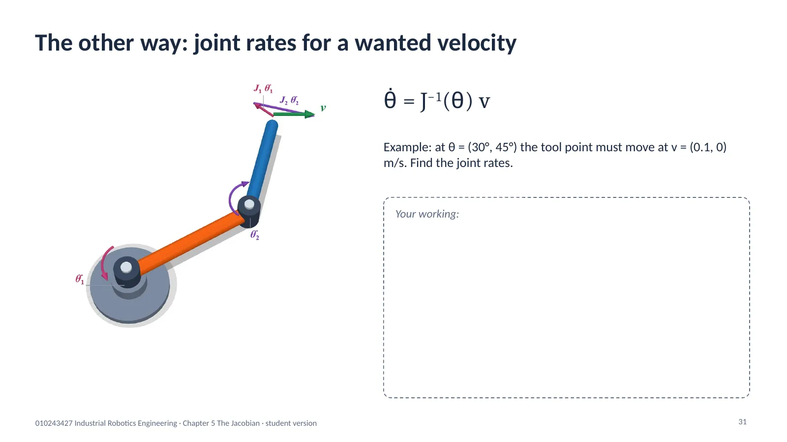
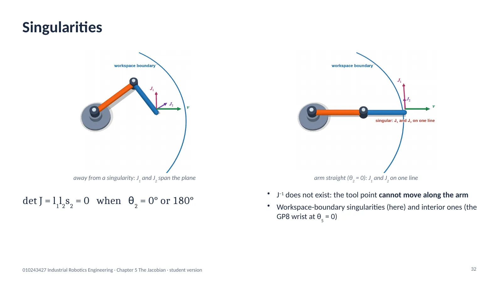
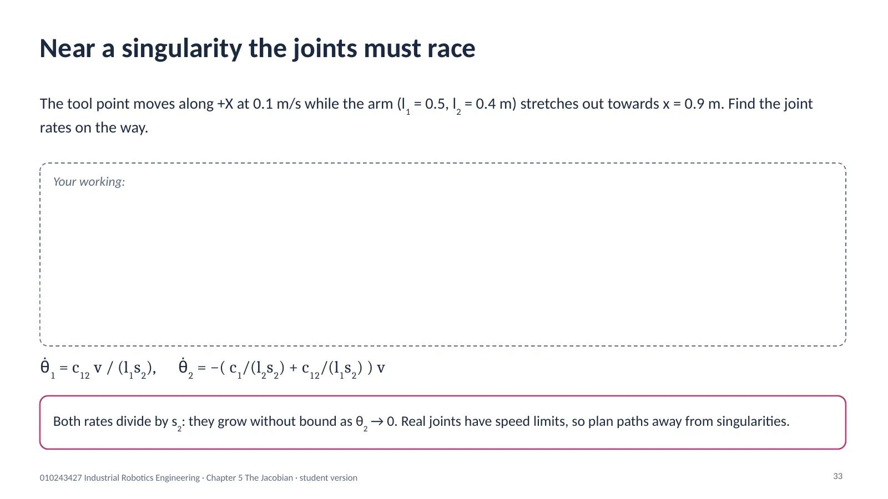
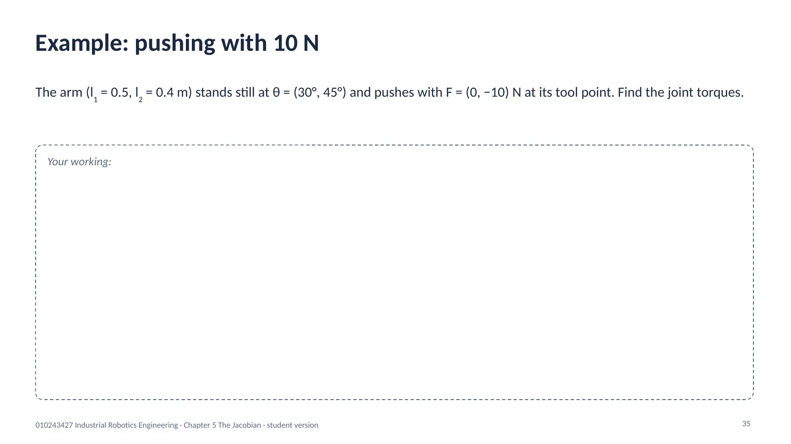

หน้านี้เพิ่มจากตำรา (Craig 5.8–5.10): ชื่อบทของสไลด์เดิมคือ “Velocities and Static Forces” แต่ไม่มีเนื้อหาส่วนนี้อยู่เลย จาโคเบียน J ตัวเดิมของแขนสองก้าน (หน้า 5.2) ตอบได้อีกสามคำถาม: (1) ต้องการให้ปลายแขนเคลื่อนที่ด้วยความเร็ว v ข้อต่อต้องหมุนด้วยอัตราเท่าไร: \(\dot\theta = J^{-1}v\) (2) สูตรนี้ใช้ไม่ได้ที่ท่าไหน: ภาวะเอกฐาน (singularity) คือท่าที่ดีเทอร์มิแนนต์ของ J (determinant เขียนย่อว่า det J) เป็นศูนย์ (3) ปลายแขนดันด้วยแรง F ข้อต่อต้องออกแรงบิดเท่าไร: \(\tau = J^TF\) หน้านี้ครอบคลุมสไลด์หน้า 31–35 มี 4 โจทย์
This part is added from the textbook (Craig 5.8–5.10): the old slides' chapter title promised “Velocities and Static Forces”, but they had no such content. The same J of the two-link arm (page 5.2) answers three more questions: (1) which joint rates give a wanted velocity v of the tool point: \(\dot\theta = J^{-1}v\); (2) where that fails: a singularity is a pose where the determinant of J (det J) is zero; (3) which joint torques hold a force F at the tool: \(\tau = J^TF\). This page covers slides pp. 31–35, with 4 problems.
ลูกศรสีเขียวคือความเร็ว v ที่ต้องการ ตั้งได้ด้วยแถบ vx, vy ทุกครั้งที่เลื่อนแถบ หน้านี้คำนวณ θ̇ = J⁻¹v ให้ใหม่ ลูกศรสีชมพูและสีม่วงคือส่วนที่ข้อต่อ 1 และ 2 ให้ (J₁θ̇₁ และ J₂θ̇₂) ต่อกันแล้วได้ v พอดี
The green arrow is the wanted velocity v, set with the vx and vy sliders. At every change the page works out θ̇ = J⁻¹v again. The pink and purple arrows are what joints 1 and 2 give (J₁θ̇₁ and J₂θ̇₂): placed head to tail they make exactly v.

ลูกศรสีชมพู J₁ และสีม่วง J₂ คือสองคอลัมน์ของ J วาดที่ปลายแขน (ย่อขนาดลง) ปลายแขนเคลื่อนที่ได้เฉพาะในทิศที่เป็นผลรวมของสองลูกศรนี้ เส้นโค้งสีน้ำเงินคือขอบปริภูมิทำงาน (รัศมี l₁ + l₂ = 0.9 m)
The pink arrow J₁ and the purple arrow J₂ are the two columns of J, drawn at the tool point (scaled down). The tool point can move only in directions made by adding these two arrows. The blue curve is the workspace boundary (radius l₁ + l₂ = 0.9 m).
แขนสองก้านนี้อยู่ในภาวะเอกฐานเมื่อ θ₂ เท่ากับเท่าไร
At which θ₂ is this two-link arm singular?

แถบเลื่อนวางปลายแขนไว้บนแกน X ที่ระยะ x จากฐาน ลูกศรสีเขียวคือความเร็วที่ต้องการ 0.1 m/s ไปทาง +X ค่าใต้ภาพคืออัตราของข้อต่อที่ต้องใช้ ณ ตำแหน่งนั้น ลองเลื่อน x จาก 0.6 m ไปจนถึง 0.9 m
The slider puts the tool point on the X axis, x from the base. The green arrow is the wanted velocity, 0.1 m/s along +X. Under the picture are the joint rates needed at that place. Move x from 0.6 m all the way to 0.9 m.

ลูกศรสีแดงคือแรง F ที่ปลายแขนดันสิ่งแวดล้อม (หน่วยนิวตัน, N) ลูกศรโค้งที่ข้อต่อคือแรงบิด τ ที่มอเตอร์ต้องออกเพื่อให้แขนอยู่นิ่ง (หน่วยนิวตันเมตร, N·m) เส้นประ r₁ และ r₂ คือแขนโมเมนต์: ระยะตั้งฉากจากข้อต่อถึงแนวแรง
The red arrow is the force F the tool point applies to the world (in newtons, N). The turning arrows at the joints are the torques τ the motors must give to hold the arm still (in newton metres, N·m). The dashed lines r₁ and r₂ are the lever arms: the distance, at right angles, from each joint to the line of the force.